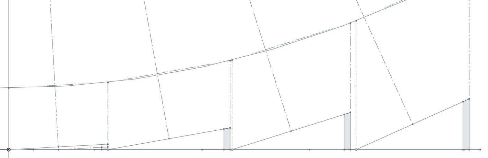
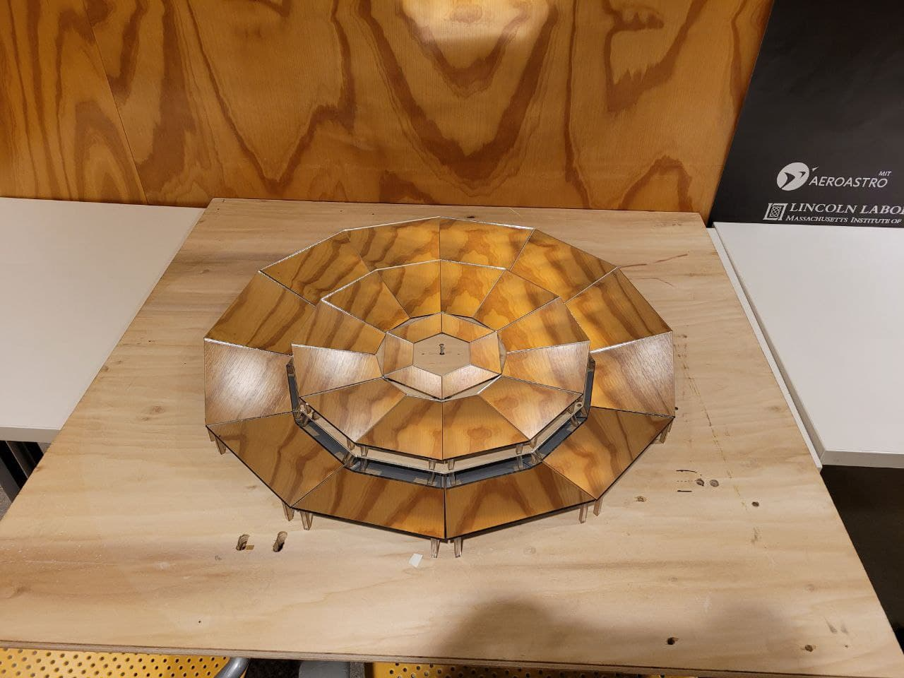
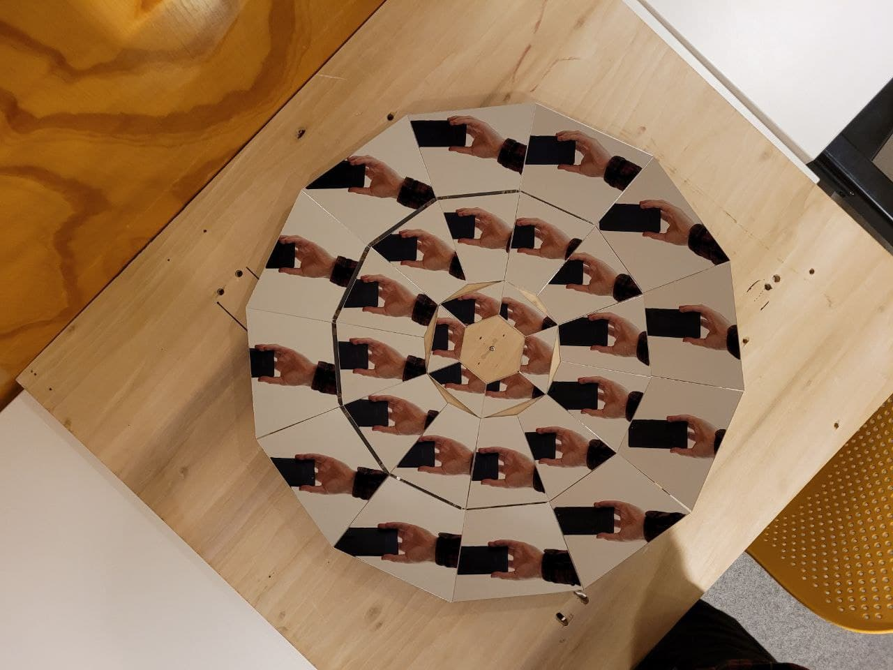

<topbar style="display:none;">
<item><a href="../index.html">Home</a></item>
<item><a href="../about.html">About</a></item>
</topbar>
<!-- This is a comment, it is ignored by the compiler/interpreter -->
# Week 10
<div></div>
## Overview
<div></div>
This week I cut out the stands for each panel of the fresnel reflector and began assembling the reflector for early characterization.
The stands were cut to maintain the correct angle based on the projected parabolic dish which defines the fresnel reflector (see below)

After cutting out the stands, I began laying out the reflector as it would be permanently assembled, with tape so that things could be adjusted if the focus ended up not being correct. Two-sided tape was attached to the back corners of each panel, and the stands were adhered to the tape. Tape was placed on a large wooden board of approximately the base dimensions that will be used in the final reflector, and the temporary panel-stand pieces were placed in concentric rings as designed.
<center></center>
Shown above is the temporary assembly including the first 3 of 4 reflector rings. Focusing appeared to be roughly at the expected 37", but testing is too difficult indoors/without a plane light source to be confident. The dimensions of the panels worked out properly so that they are just barely not touching when angled, making it easy to tell whether the stands are the correct height.
<center></center>
Taking an image from the expected focal point should roughly give an image of the camera lens, which is observed in the image above. This is another preliminary indication that the assembly is a proper fresnel reflector, but proper validation still requires a plane light source. Next week the last ring will be added and the assembly can be taken outside and tested.